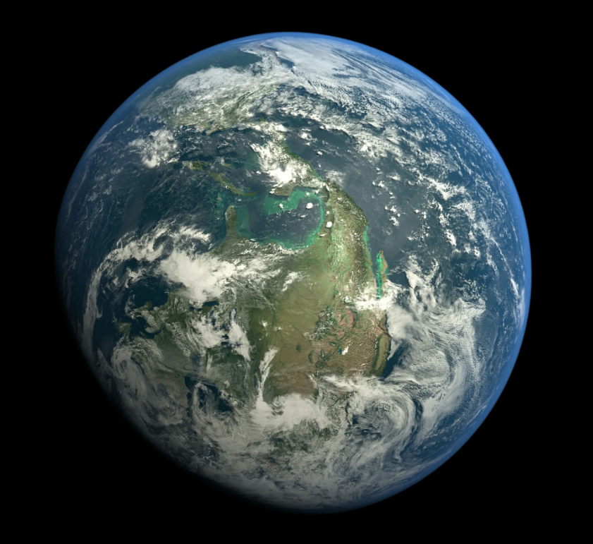
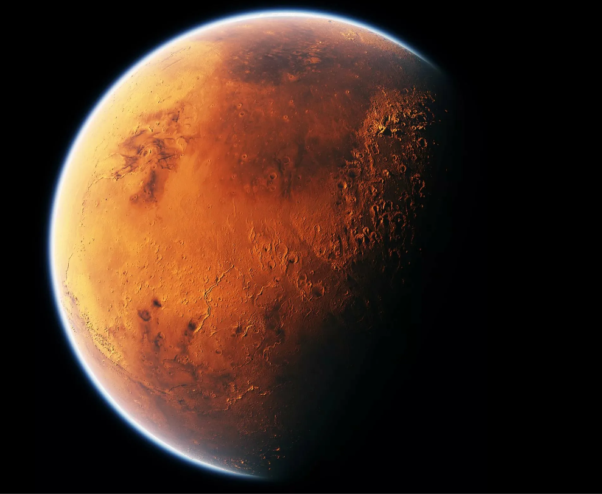
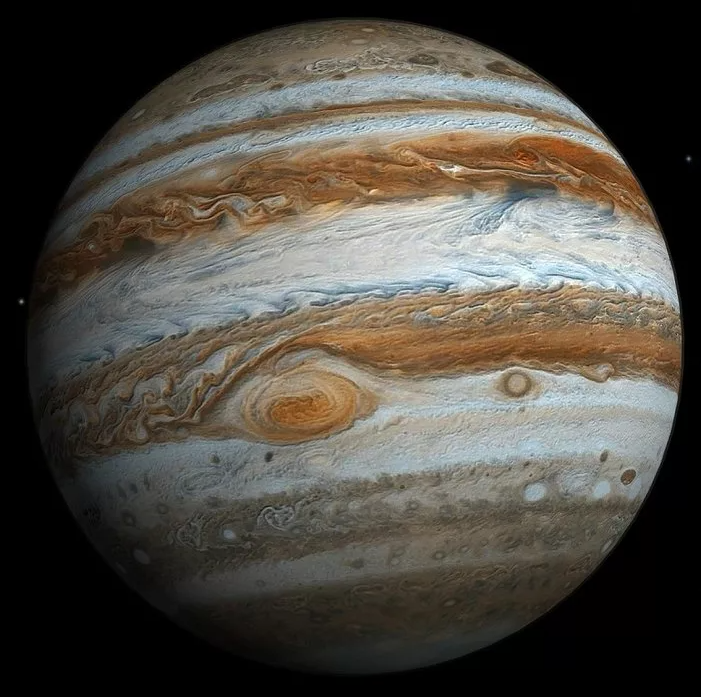
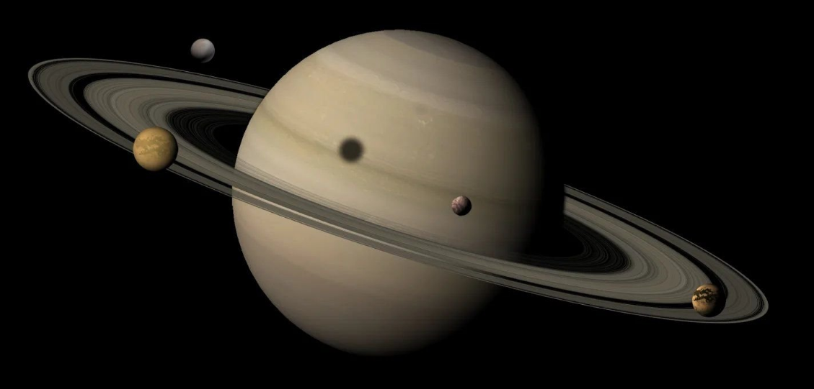
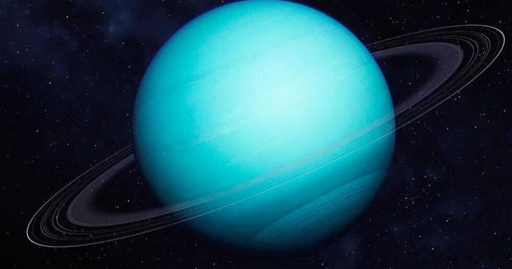

Земля́ — третья по удалённости от Солнца планета Солнечной системы. Самая плотная, пятая по диаметру и массе среди всех планет Солнечной системы и крупнейшая среди планет земной группы, в которую входят также Меркурий, Венера и Марс. Единственное известное человеку в настоящее время тело во Вселенной, населённое живыми организмами.
В публицистике и научно-популярной литературе могут использоваться синонимические термины — мир, голубая планета[16][17][18], Терра (от лат. Terra).
Научные данные указывают на то, что Земля образовалась из солнечной туманности около 4,54 миллиарда лет назадПерейти к разделу «#История Земли»[19] и вскоре после этого обрела свой единственный естественный спутник — Луну. Жизнь, предположительно, появилась на Земле примерно 4,25 млрд лет назад[20], то есть вскоре после её возникновенияПерейти к разделу «#Возникновение жизни».Марс — четвёртая по удалённости от Солнца
и седьмая по размеру планета Солнечной системы; масса планеты составляет
10,7 % массы Земли.Перейти к разделу «#Основные сведения» Названа в честь
Марса — древнеримского бога войны, соответствующего древнегреческому Аресу.
Перейти к разделу «#В античной мифологии» Также Марс называют «красной планетой»
из-за красноватого оттенка поверхности, придаваемого ей минералом маггемитом —
γ-оксидом железа(III).Начиная с 1962 года непосредственным исследованием Марса
с помощью АМС занимались в СССР (программы «Марс», «Фобос») и США (программы «Маринер»,
«Викинг», «Mars Global Surveyor» и другие), а также Европейское космическое агентство
(программа «Марс-экспресс»), Индия (программа «Мангальян») и Китай (Тяньвэнь-1, Чжужун).
На сегодняшний день Марс — наиболее подробно изученная планета Солнечной системы после Земли.


Юпитер
Крупнейшая планета Солнечной системы, пятая по удалённости от Солнца. Наряду с Сатурном, Юпитер классифицируется как газовый гигант.

Сатурн
Шестая планета по удалённости от Солнца и вторая по размерам планета в Солнечной системе после Юпитера.

Уран
Планета Солнечной системы, седьмая по удалённости от Солнца, третья по диаметру и четвёртая по массе.